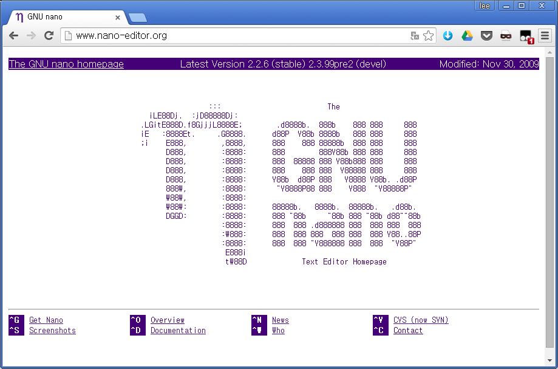
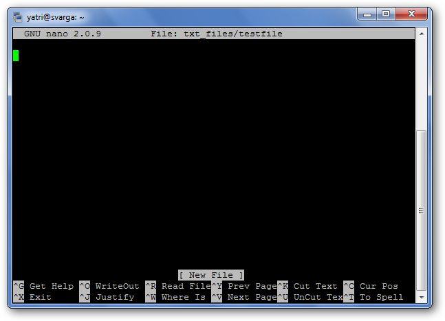
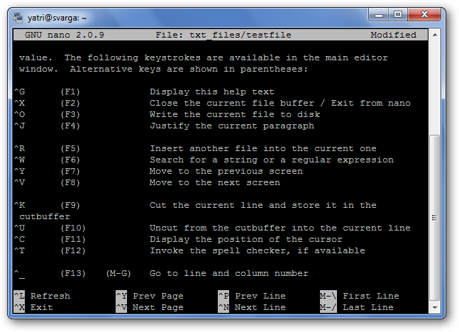
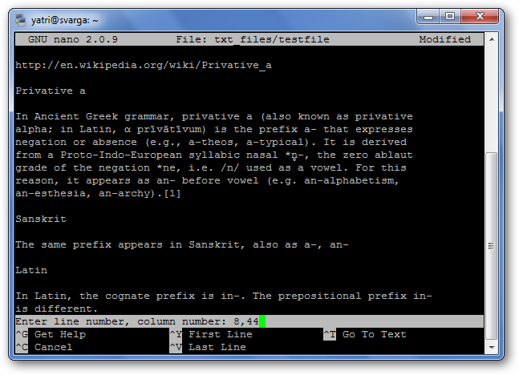
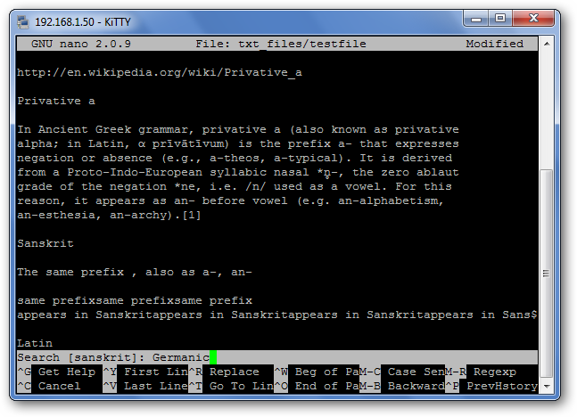
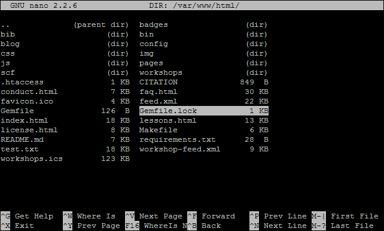
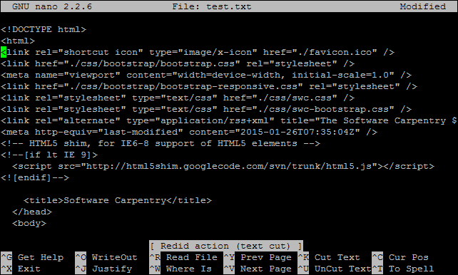
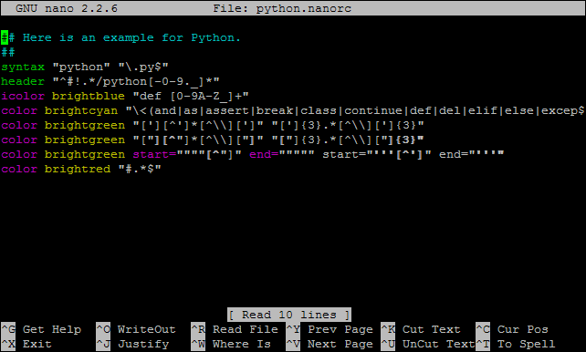

01. 나노 편집기 (Nano Editor)

GNU Nano
GNU 나노 편집기는 유닉스의 기본 편집기인 vi나 emacs 같은 처음 진입장벽이 높은 하지만 강력한 편집기보다는 처음 유닉스를 접하는 사용자가 쉽게 사용할 수 있는 편집기로 GNU에서 기존 전자우편 편집기인 Pico를 바탕으로 만들어진 편집기로 초보자에게는 정말 적합하다.
GNU Nano 편집기는 http://www.nano-editor.org/ 에서 다운로드 받을 수 있다.
(GNU Nano) 편집기 기능
Basic Features
- 편집문서 생성, 열기, 저장
- 이동(Navigation)
- 찾기, 바꾸기 (Find and Replace)
- 잘라내기, 복사하기, 붙여넣기 (Cut, Copy, Paste)
- 텍스트 양식 (Text Formatting)
- 실행취소, 재실생 (Undo and redo)
- UTF-8 지원
- 구문 강조 (Syntax highlighting)
(GNU Nano) 편집기 기능
편집문서 생성, 열기, 저장
|  |
|
(GNU Nano) 편집기 기능
단축기 및 도움말
|  |
|
(GNU Nano) 편집기 기능
이동 (Navigation)
|  |
|
(GNU Nano) 편집기 기능
잘라내기, 복사하기, 붙여넣기 (Cut, Copy, Paste)
|
(GNU Nano) 편집기 기능
찾기 바꾸기 (Find and Replace)
|  |
|
(GNU Nano) 편집기 기능
파일 열기
|  |
|
(GNU Nano) 편집기 기능
실행 취소, 재실행
|  |
$nano -u test.txt
|
(GNU Nano) 편집기 기능
구문 강조 (Syntax Highlighting)
|  |
root@vm:/usr/share/nano# ls asm.nanorc fortran.nanorc man.nanorc ocaml.nanorc ruby.nanorc awk.nanorc gentoo.nanorc mgp.nanorc patch.nanorc sh.nanorc cmake.nanorc groff.nanorc mutt.nanorc perl.nanorc tcl.nanorc c.nanorc html.nanorc nano-menu.xpm php.nanorc tex.nanorc css.nanorc java.nanorc nanorc.nanorc pov.nanorc xml.nanorc debian.nanorc makefile.nanorc objc.nanorc python.nanorc |